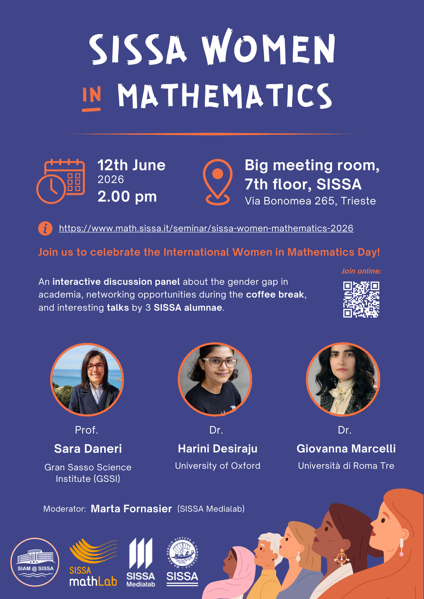

SISSA Women in Mathematics
The event aims to foster discussion and reflection on the role of women in academia, with a particular focus on the challenges and barriers women still face in university environments today.
We are delighted to welcome Professors Sara Daneri (GSSI), Harini Desiraju (University of Oxford), and Giovanna Marcelli (Universita di Roma Tre), who will share their experiences and perspectives on these topics.
The afternoon will begin with a panel discussion moderated by Marta Fornasier, mathematician and science communicator currently working at MediaLab (SISSA). This will be followed by short talks by each speaker, approximately 30-45 minutes each, introducing their research fields and interests.
